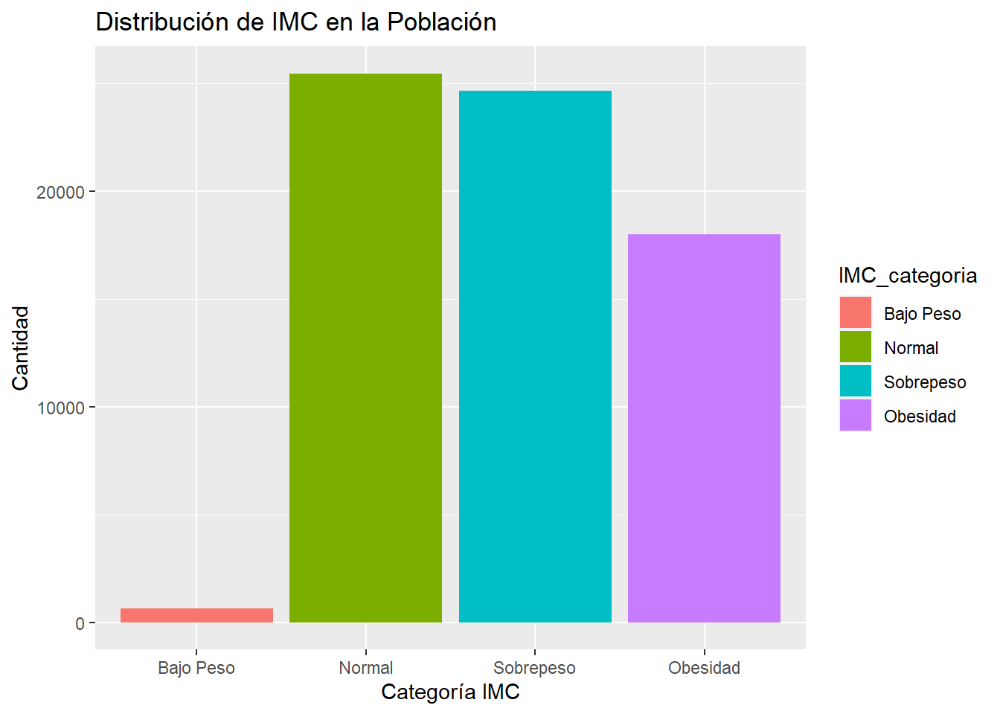
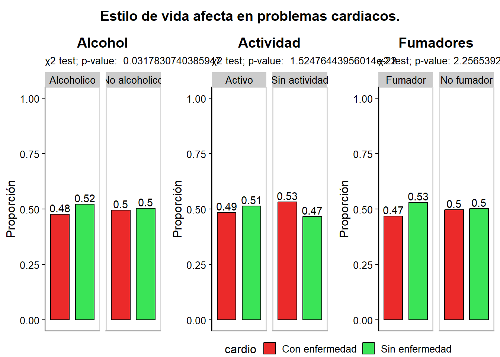
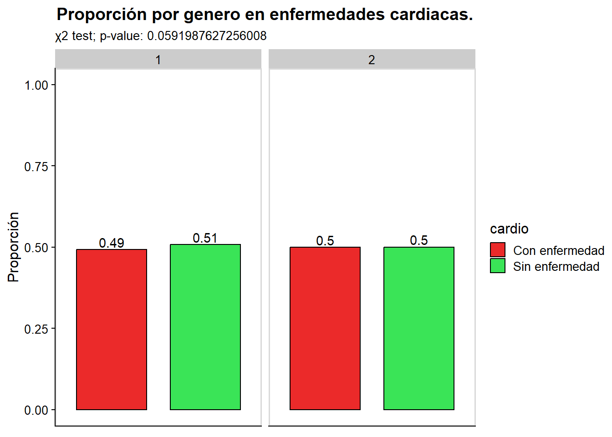
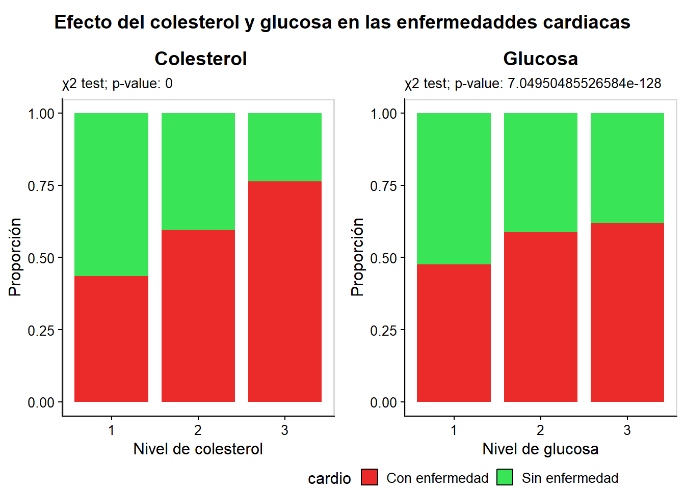
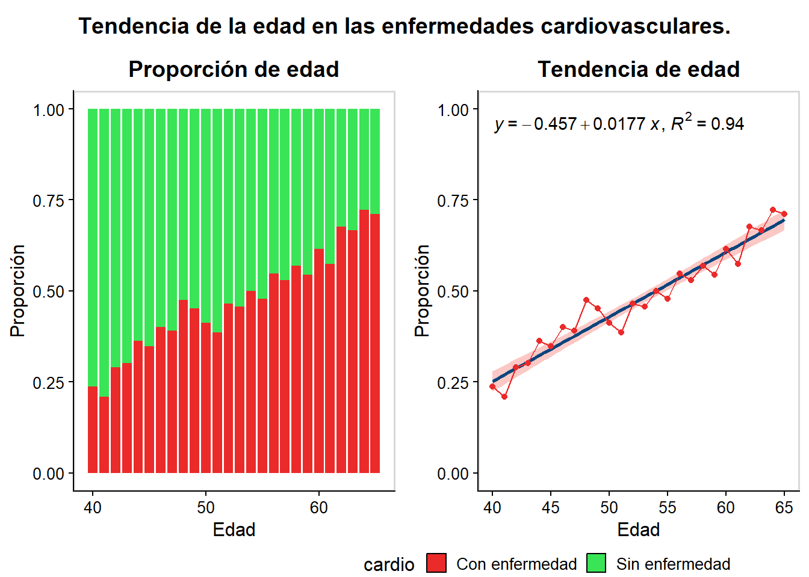
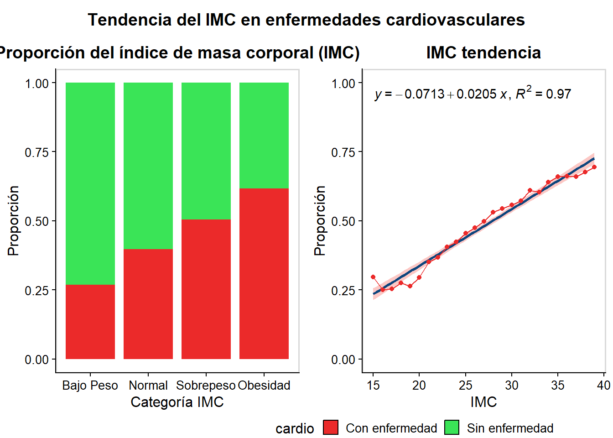
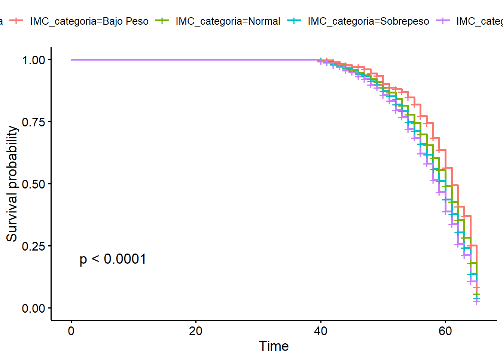

Los hábitos son parte fundamental de la vida de todas las personas, y dependiendo de ellos se moldea el estilo de vida, por lo tanto, esto se ve reflejado en diferentes aspectos; como lo es su personalidad, su estado de salud, sus tipos de lenguaje, entre otros.
Sin embargo, hay acciones que de ser realizadas de una manera constante durante grandes periodos de tiempo pueden llegar a ser demasiado peligrosas que hagan desarrollar graves enfermedades o que inclusive podrían llegar a la muerte. Es por ello que debemos de ser capaces de revocar aquellos malos hábitos o generar nuevos que nos garanticen una mejor calidad de vida y que a la vez prolonguen los años de vitalidad.
Hipótesis
\(H_1:\)
La actividad física regular ejerce un efecto protector el cual reduce la incidencia de enfermedades cardiovasculares y metabólicas evidenciado mediante el incremento del índice de supervivencia en adultos mayores de 39 años con factores de riesgo concomitantes.
\(H_0:\)
La actividad física regular no ejerce un efecto protector el cual reduce la incidencia de enfermedades cardiovasculares y metabólicas evidenciado mediante el incremento del índice de supervivencia en adultos mayores de 39 años con factores de riesgo concomitantes.
Desarrollo
Antes de realizar el análisis, el documento se depura por medio de Python, para no tener valores nulos, corregir el tipo de dato (en casos necesario), etc.
Análisis
Se cargan las paqueterías necesarias :
library(readr)library(dplyr)
Attaching package: 'dplyr'
The following objects are masked from 'package:stats':
filter, lag
The following objects are masked from 'package:base':
intersect, setdiff, setequal, union
Algunas variables hacen referencia a medidas bioquimicas(ap_hi, ap_lo, cholesterol,gluc, cardio), a algunos hábitos (smoke, alco,active), y otras a aspetos generales (gender, height, weight).
Se calcula en valor del IMC para cada registro, de igual manera, se determina si una persona tiene hipertensión mediante su nivel de presión sistólica. Tambien se observa que tenemos la edad en días por lo que consideramos más conveniente cambiarlo a años.
datos <- datos %>%mutate(edad_anos =ceiling(age /365.25),IMC = weight / (height/100)^2,hipertension =ifelse(ap_hi >130, 1, 0))
Se obtiene el análisis descriptivo de todas las variables:
summary(datos)
index id age gender
Min. : 0 Min. : 0 Min. :14275 Min. :1.000
1st Qu.:17496 1st Qu.:25001 1st Qu.:17658 1st Qu.:1.000
Median :35012 Median :50018 Median :19701 Median :1.000
Mean :35002 Mean :49976 Mean :19465 Mean :1.349
3rd Qu.:52488 3rd Qu.:74870 3rd Qu.:21324 3rd Qu.:2.000
Max. :69999 Max. :99999 Max. :23713 Max. :2.000
height weight ap_hi ap_lo
Min. : 55.0 Min. : 11.00 Min. : 80.0 Min. : 40.00
1st Qu.:159.0 1st Qu.: 65.00 1st Qu.:120.0 1st Qu.: 80.00
Median :165.0 Median : 72.00 Median :120.0 Median : 80.00
Mean :164.4 Mean : 74.12 Mean :126.6 Mean : 81.36
3rd Qu.:170.0 3rd Qu.: 82.00 3rd Qu.:140.0 3rd Qu.: 90.00
Max. :250.0 Max. :200.00 Max. :220.0 Max. :160.00
cholesterol gluc smoke alco
Min. :1.000 Min. :1.000 Min. :0.00000 Min. :0.00000
1st Qu.:1.000 1st Qu.:1.000 1st Qu.:0.00000 1st Qu.:0.00000
Median :1.000 Median :1.000 Median :0.00000 Median :0.00000
Mean :1.365 Mean :1.226 Mean :0.08801 Mean :0.05355
3rd Qu.:2.000 3rd Qu.:1.000 3rd Qu.:0.00000 3rd Qu.:0.00000
Max. :3.000 Max. :3.000 Max. :1.00000 Max. :1.00000
active cardio edad_anos IMC
Min. :0.0000 Min. :0.0000 Min. :40.00 Min. : 3.472
1st Qu.:1.0000 1st Qu.:0.0000 1st Qu.:49.00 1st Qu.: 23.875
Median :1.0000 Median :0.0000 Median :54.00 Median : 26.346
Mean :0.8034 Mean :0.4949 Mean :53.79 Mean : 27.523
3rd Qu.:1.0000 3rd Qu.:1.0000 3rd Qu.:59.00 3rd Qu.: 30.119
Max. :1.0000 Max. :1.0000 Max. :65.00 Max. :298.667
hipertension
Min. :0.0000
1st Qu.:0.0000
Median :0.0000
Mean :0.2731
3rd Qu.:1.0000
Max. :1.0000
Se calisfican los registros de acuerdo a su valor de IMC:
Se grafica la distribución en base a la clasificación del IMC:
# Visualización: Gráfico de barras para la distribución del IMCggplot(datos, aes(x=IMC_categoria, fill=IMC_categoria)) +geom_bar() +labs(x="Categoría IMC", y="Cantidad", title="Distribución de IMC en la Población")

Se observa que, los datos se encuentran sesgados hacia la derecha, lo cual puede considerarse malo, debido a que hay un gran porcentaje dentro de los grupos de Sobrepreso y Obesidad.
Predicción de infarto
Antes de ir de realizar un modelo, se difiven los registros en grupos de acuerdo a la edad, para un mejor estudio:
Se crea el modelo, en este caso binomial, ya que solo nos interesa saber si una persona debido a sus caracteristicas puede tener un infarto(exito) o no(fracaso).
Por otro lado, para poder ver como se relacionan los hábitos, y si estos se pueden considerar como factores que hacen que una persona sea propensa a una enfermedad cardiaca; se representan a través de tablas de frecuencias, y para ello se utiliza una función que nos ayuda a sacar las frecuencias relativas en relación a dos variables.
freq.table <-function (x, y, z){substitute(x %>%group_by(y, z) %>%summarise(n =n ()) %>%mutate(freq = n /sum (n)))%>% eval}
Con lo anterior se calcula la frecuencia relativa en base a enfermedades cardiacas vs alcoholismo:
alco <-freq.table(datos, alco, cardio)
`summarise()` has grouped output by 'alco'. You can override using the
`.groups` argument.
alco
# A tibble: 4 × 4
# Groups: alco [2]
alco cardio n freq
<chr> <chr> <int> <dbl>
1 Alcoholico Con enfermedad 1758 0.478
2 Alcoholico Sin enfermedad 1923 0.522
3 No alcoholico Con enfermedad 32261 0.496
4 No alcoholico Sin enfermedad 32792 0.504
Así mismo, se hace la prueba del Chi cuadrado, para saber si el alcoholismo afecta en que una persona pueda tener una enfermedad cardiaca o no.
alcochi<-chisq.test(datos$cardio, datos$alco)
Realizamos la grafica, sin embargo la proyectamos más adelante para realizar una comparación con otras variables.
alco.plot<-ggplot(data = alco, aes(x = cardio, y = freq, fill = cardio)) +geom_bar(stat='identity', colour ='black',width=.75)+geom_text(aes(label=round(freq,2)), position=position_dodge(width=0.9), vjust=-0.25)+ylim (0, 1)+facet_grid(~alco)+#Se separa en un grid.scale_fill_manual(values=c( "#EB2A2A", "#3AE457"))+theme_half_open(12)+panel_border()+ggtitle("Alcohol")+#Se agrega el titulotheme(plot.title =element_text(hjust =0.5), #Centrado de tituloaxis.title.x=element_blank(), #Se elimina la visualización de las variables en la graficaaxis.text.x=element_blank(),axis.ticks.x=element_blank())+labs(y ="Proporción",subtitle =paste("χ2 test; p-value: ", alcochi$p.value))
De igual manera, se hace lo del caso anterior, pero para las variables : active y smoke.
Actividad física vs Enfermedad Cardiaca
active<-freq.table(datos, active, cardio)
`summarise()` has grouped output by 'active'. You can override using the
`.groups` argument.
active
# A tibble: 4 × 4
# Groups: active [2]
active cardio n freq
<chr> <chr> <int> <dbl>
1 Activo Con enfermedad 26822 0.486
2 Activo Sin enfermedad 28400 0.514
3 Sin actividad Con enfermedad 7197 0.533
4 Sin actividad Sin enfermedad 6315 0.467
Prueba de Chi Cuadrado:
activechi<-chisq.test(datos$cardio, datos$active)
Enseguida realizamos la gráfica:
active.plot<-ggplot(data = active, aes(x = cardio, y = freq, fill = cardio)) +geom_bar(stat='identity', colour ='black', width=0.75)+geom_text(aes(label=round(freq,2)), position=position_dodge(width=0.9), vjust=-0.25)+ylim (0, 1)+facet_grid(~active)+#Se separa en un grid.scale_fill_manual(values=c("#EB2A2A", "#3AE457"))+theme_half_open(12)+panel_border()+ggtitle("Actividad")+#Se agrega el titulotheme(plot.title =element_text(hjust =0.5), #Centrado de tituloaxis.title.x=element_blank(), #Se elimina la visualización de las variables en la graficaaxis.text.x=element_blank(),axis.ticks.x=element_blank())+labs(y ="Proporción",subtitle =paste("χ2 test; p-value: ", activechi$p.value))
Fumador x Enfermedad Cardiaca:
smoke <-freq.table(datos, smoke, cardio)
`summarise()` has grouped output by 'smoke'. You can override using the
`.groups` argument.
smoke
# A tibble: 4 × 4
# Groups: smoke [2]
smoke cardio n freq
<chr> <chr> <int> <dbl>
1 Fumador Con enfermedad 2836 0.469
2 Fumador Sin enfermedad 3213 0.531
3 No fumador Con enfermedad 31183 0.497
4 No fumador Sin enfermedad 31502 0.503
Prueba de Chi Cuadrado :
smokechi<-chisq.test(datos$cardio, datos$smoke)
Y la gráfica :
smoke.plot <-ggplot(data = smoke, aes(x = cardio, y = freq, fill = cardio)) +geom_bar(stat='identity', colour ='black', width=0.75)+geom_text(aes(label=round(freq,2)), position=position_dodge(width=0.9), vjust=-0.25)+ylim (0, 1)+facet_grid(~factor(smoke, levels=c('Fumador', 'No fumador')))+#Se separa en un grid.scale_fill_manual(values=c("#EB2A2A", "#3AE457"))+theme_half_open(12)+panel_border()+ggtitle("Fumadores")+#Se agrega el titulotheme(plot.title =element_text(hjust =0.5), #Se centra el tituloaxis.title.x=element_blank(), #Se elimina la visualización de las variables en la graficaaxis.text.x=element_blank(),axis.ticks.x=element_blank())+labs( y ="Proporción",subtitle =paste("χ2 test; p-value:", smokechi$p.value))
Finalmente, se realiza la comparación que se mencionó anteriormente. A continuación presentamos las tres gráficas anteriores, para poder sacar nuestras conclusiones:
#Graficas del estilo de vida.lifestyle.plot<-plot_grid(alco.plot +theme(legend.position="none"), active.plot +theme(legend.position="none"), smoke.plot +theme(legend.position="none"),ncol=3) #Titulo generaltitle <-ggdraw() +draw_label("Estilo de vida afecta en problemas cardiacos.",fontface='bold')lifestyle.plot<-plot_grid(title, lifestyle.plot,ncol =1,rel_heights=c(0.1, 1))#Se crea las leyendaslegend <-get_legend(smoke.plot +theme(legend.position =c(.45,.5),legend.direction="horizontal"))lifestyle.plot<-plot_grid(lifestyle.plot, legend,ncol=1,rel_heights =c(1, .05))lifestyle.plot

Rasgos cualitativos vs Enfermedad Cardiaca
Una característica muy representativa de las personas es su género, por consecuencia puede que esto sea un factor perjudicial para poder desarrollar una enfermedad de este tipo debido al tipo de cuerpo y a todo lo que involucra. Por tanto, hemos de comprobar si este afecta o no. Primero se obtienen las frecuencias de la relación:
gender <-freq.table(datos, gender, cardio)
`summarise()` has grouped output by 'gender'. You can override using the
`.groups` argument.
gender
# A tibble: 4 × 4
# Groups: gender [2]
gender cardio n freq
<int> <chr> <int> <dbl>
1 1 Con enfermedad 22037 0.492
2 1 Sin enfermedad 22727 0.508
3 2 Con enfermedad 11982 0.500
4 2 Sin enfermedad 11988 0.500
Se realiza nuestra prueba de Chi:
genderchi<-chisq.test(datos$gender, datos$cardio)
Se crea la gráfica:
gender.plot<-ggplot(gender, aes(x = cardio, y = freq, fill = cardio))+geom_bar(stat='identity', colour ='black', width=0.75)+ylim (0, 1)+geom_text(aes(label=round(freq,2)), position=position_dodge(width=0.9), vjust=-0.25)+facet_grid(~gender)+#Se divide por generoscale_fill_manual(values=c("#EB2A2A", "#3AE457"))+theme_half_open(12)+panel_border()+ggtitle("Proporción por genero en enfermedades cardiacas.")+#Se agrega titulotheme(plot.title =element_text(hjust =0.5),axis.title.x=element_blank(), #Se elimina la visualización de las variables en la graficaaxis.text.x=element_blank(),axis.ticks.x=element_blank())+labs(x ="", y ="Proporción",subtitle =paste("χ2 test; p-value:", genderchi$p.value))
Y se visualiza:
gender.plot

Rasgos cuantitativos vs Enfermedad Cardiaca
Ahora bien, tenemos otras cualidades que aunque no sean tan visibles puedan perjudicarnos, tal es el caso de la glucosa y el colesterol, así que se analizan también: Primero se realiza con el colesterol, obteniendo sus frecuencias:
cholesterol.plot<-ggplot(cholesterol, aes(x = cholesterol, y = freq, fill = cardio))+geom_bar(stat ='identity', width=0.85, position =position_fill (reverse =TRUE))+scale_fill_manual(values=c("#EB2A2A", "#3AE457"))+theme_half_open(12)+panel_border()+ggtitle(" Colesterol")+#Se agrega el titulotheme(plot.title =element_text(hjust =0.5))+#Se centra el titulolabs(x ="Nivel de colesterol", y ="Proporción",subtitle =paste("χ2 test; p-value:", cholchi$p.value))
Se realiza lo mismo para la glucosa, se calculan las frecuencias:
gluc<-freq.table(datos, gluc, cardio)
`summarise()` has grouped output by 'gluc'. You can override using the
`.groups` argument.
gluc
# A tibble: 6 × 4
# Groups: gluc [3]
gluc cardio n freq
<int> <chr> <int> <dbl>
1 1 Con enfermedad 27798 0.476
2 1 Sin enfermedad 30636 0.524
3 2 Con enfermedad 2985 0.589
4 2 Sin enfermedad 2085 0.411
5 3 Con enfermedad 3236 0.619
6 3 Sin enfermedad 1994 0.381
Se realiza la prueba de Chi al cuadrado:
glucchi<-chisq.test(datos$gluc, datos$cardio)
Se crea la gráfica:
gluc.plot<-ggplot(gluc, aes(x = gluc, y = freq, fill = cardio))+geom_bar(stat ='identity', width=0.85, position =position_fill (reverse =TRUE))+scale_fill_manual(values=c("#EB2A2A", "#3AE457"))+theme_half_open(12)+panel_border()+ggtitle("Glucosa")+theme(plot.title =element_text(hjust =0.5))+labs(x ="Nivel de glucosa", y ="Proporción",subtitle =paste("χ2 test; p-value:", glucchi$p.value))
A final se realiza un comparativo de ambas variables, por medio de sus gráficas, así que se visualizan juntas:
gluc_and_chol<-plot_grid(cholesterol.plot+theme(legend.position="none"), gluc.plot+theme(legend.position="none"),ncol=2,rel_heights =c(1, .1))title_chol <-ggdraw() +draw_label("Efecto del colesterol y glucosa en las enfermedaddes cardiacas", fontface='bold') gluc_and_chol<-plot_grid(title_chol, gluc_and_chol,ncol =1,rel_heights=c(0.1, 1))gluc_and_chol<-plot_grid(gluc_and_chol, legend,ncol=1,rel_heights =c(1, .05))
Visualización:
gluc_and_chol

Pr otro lado, hay otro dato cuantitativo: la edad; pero este se analiza por separado ya que no tiene relación con los otros dos anteriores. Se crea la tabla de frecuencias:
age <-freq.table(datos, edad_anos, cardio)
`summarise()` has grouped output by 'edad_anos'. You can override using the
`.groups` argument.
Se realiza la gráfica:
age.plot<-ggplot(age, aes(x = edad_anos, y = freq, fill = cardio))+geom_bar(stat ='identity', width=0.85, position =position_fill (reverse =TRUE))+scale_fill_manual(values=c("#EB2A2A", "#3AE457"))+theme_half_open(12)+panel_border()+ggtitle("Proporción de edad")+#Titulotheme(plot.title =element_text(hjust =0.5))+#Centrado de titulolabs(x ="Edad", y ="Proporción" )
Después nos enfocamos unicamente en aquellos que estan enfermos, y obtenemos el valor de su correlación:
age.1<-subset(age, cardio =="Con enfermedad") #Nos enfocamos solo en los que tienen enfermedadcorage<-cor(age.1$edad_anos,age.1$freq)
Aquí observamos una correlacion del 0.97, lo cual podría considerarse como bueno. Se grafica lo que obtuvimos anteriormente :
age.tendency.plot<-ggplot(data = age.1, aes(x = edad_anos, y = freq, fill = cardio)) +stat_poly_line(color="#0C457D") +#Se agrega la linea de tendenciastat_poly_eq(aes(label =paste(after_stat(eq.label),after_stat(rr.label), sep ="*\", \"*")))+#Se agrega la ecuación y la r2geom_point(color="#EB2A2A")+geom_line(color="#EB2A2A")+ylim(0,1)+theme_half_open(12)+panel_border()+ggtitle("Tendencia de edad")+#Se agrega el titulotheme(plot.title =element_text(hjust =0.5))+#Centrado de titulolabs(x ="Edad", y ="Proporción" )
Y ahora se hacen visibles ambas gráficas:
#Se ponen las dos graficas en un mismo espacioages.plot<-plot_grid(age.plot+theme(legend.position="none"), age.tendency.plot+theme(legend.position="none"),ncol=2,rel_heights =c(1, .1))title_ages <-ggdraw() +draw_label("Tendencia de la edad en las enfermedades cardiovasculares.",fontface='bold') ages.plot<-plot_grid(title_ages, ages.plot,ncol =1,rel_heights=c(0.1, 1))ages.plot<-plot_grid(ages.plot, legend,ncol=1,rel_heights =c(1, .05))ages.plot

IMC vs Enfermedad Cardiaca
Como sabemos el IMC es una medida que depende del peso y la altura, es por ello, que se analizan a través de esta medida. Primero hemos de eliminar aquellos valores que se consideran atipicos, para no tener valores extremos ni muy pequeños; y se hará aplicando el método de IQR:
IQRmethod <-function(x,y){quartiles <-quantile(y, probs=c(.25, .75),na.rm =FALSE)no_outlier <-subset(x, y > quartiles[1] -1.5*IQR(y) & y < quartiles[2] +1.5*IQR(y))return(no_outlier)}
Ahora se eliminan los datos atipicos:
imc_cutt <-IQRmethod(datos, datos$IMC)
Ya sin esos registros se obtienen las frecuencias:
bmi<-freq.table(imc_cutt, IMC_categoria, cardio)
`summarise()` has grouped output by 'IMC_categoria'. You can override using the
`.groups` argument.
Se realiza la gráfica:
bmi.plot<-ggplot(bmi, aes(x = IMC_categoria, y = freq, fill = cardio))+geom_bar(stat ='identity', width=0.85, position =position_fill (reverse =TRUE))+scale_fill_manual(values=c("#EB2A2A", "#3AE457"))+theme_half_open(12)+panel_border()+ggtitle("Proporción del índice de masa corporal (IMC)")+#Titulotheme(plot.title =element_text(hjust =0.5))+#Centrado de titulolabs(x ="Categoría IMC", y ="Proporción" )
Se obtiene la tabla de frecuencias, redondeando el valor del IMC
bmi.tendency.plot<-ggplot(data = bmi.1, aes(x =`round(IMC)`, y = freq, fill = cardio)) +stat_poly_line(color="#0C457D") +#Se agrega la linea de dentenciastat_poly_eq(aes(label =paste(after_stat(eq.label), #Ecuacion r2after_stat(rr.label), sep ="*\", \"*")))+geom_point(color="#EB2A2A")+geom_line(color="#EB2A2A")+ylim(0,1)+theme_half_open(12)+panel_border()+ggtitle("IMC tendencia")+#Titulotheme(plot.title =element_text(hjust =0.5))+#Centrado de titulolabs(x ="IMC", y ="Proporción" )
Se ponen ambas gráficas en un solo espacio:
bmi.plot1<-plot_grid(bmi.plot+theme(legend.position="none"), bmi.tendency.plot+theme(legend.position="none"),ncol=2,rel_heights =c(1, .1))title_bmi <-ggdraw() +draw_label("Tendencia del IMC en enfermedades cardiovasculares", fontface='bold') bmi.plot1<-plot_grid(title_bmi, bmi.plot1,ncol =1,rel_heights=c(0.1, 1))bmi.plot1<-plot_grid(bmi.plot1, legend,ncol=1,rel_heights =c(1, .05))
Y se visualizan:
bmi.plot1

Curvas de Kaplan-Meier para supervivencia
“Este método se usa principalmente para obtener curvas de supervivencia a partir de de los datos de tiempo de vida… obtiene una estimacion de la función de supervivencia por medio de una función escalonada” (Uribe,J.C.S.,García Cruz,E.K.,Gaviria Peña,C.,Guarín Escudero,V.(2020).’Introducción al análisis de supervivencia avanzada’.Colombia:Editorial Bonaventuriano.)
Primero se calculan los valores, con ayuda de las fuciones Suv() y survfit():
surv_obj <-Surv(time = datos$edad_anos, event = datos$cardioND)surv_fit <-survfit(surv_obj ~ IMC_categoria, data = datos)ggsurvplot(surv_fit, data = datos, pval =TRUE)

Se hace visible el resultado por medio de una grafica:
ggplot(datos, aes(x = IMC)) +geom_histogram(binwidth =1, fill ='blue', alpha =0.7) +labs(title ="Distribución del IMC") +scale_x_continuous(limits =c(0,75))